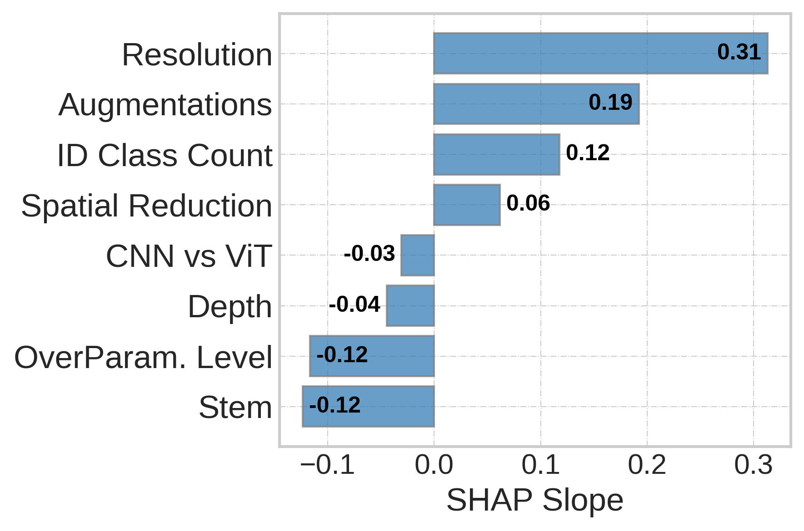

SHAP Analysis - % OOD Performance Retained
In terms of % OOD Performance Retained, ID class count shows the greatest impact.
Embeddings from pre-trained deep neural networks (DNNs) are widely used across computer vision; however, the efficacy of these embeddings when used for down-stream tasks can vary widely. We seek to understand what variables affect out-of-distribution (OOD) generalization. We do this through the lens of the tunnel effect hypothesis, which states that after training an over-parameterized DNN, its layers form two distinct groups. The first consists of the initial DNN layers that produce progressively more linearly separable representations, and the second consists of the deeper layers that compress these representations and hinder OOD generalization. Earlier work convincingly demonstrated the tunnel effect exists for DNNs trained on low-resolution images (e.g., CIFAR-10) and suggested that it was universally applicable. Here, we study the magnitude of the tunnel effect when the DNN architecture, training dataset, image resolution, augmentations, and OOD dataset are varied. We show that in some cases the tunnel effect is completely mitigated, therefore refuting that the hypothesis is universally applicable. Through extensive experiments with 10,584 trained linear probes, we find that each variable plays a role, but some have more impact than others. Our results caution against the practice of extrapolating findings from models trained on toy datasets to be universally applicable.
The tunnel effect is not universal. In (a), VGGm-11 consisting of max-pool in all 5 stages (φ = 0.5), creates tunnels (layer 7-10, gray-shaded area). In (b), the same VGGm-11 without max-pool in the first 2 stages (φ = 1, called VGGm†-11), eliminates the tunnel for all OOD datasets.
In (a), augmentation shifts the tunnel from layer 14 to 22, and in (b) from block 11 to 15. The OOD curve is the average of 8 OOD datasets with a shaded area indicating a 95% confidence interval. ⭐ denotes the start of the tunnel.
(1) and (2) Results with a fixed number of samples but a varied number of classes.
(3) and (4) Results with a fixed number of classes but a varied number of samples per class.

In terms of % OOD Performance Retained, ID class count shows the greatest impact.
In terms of ID/OOD alignment, image resolution shows the greatest impact.
In terms of Pearson correlation, ID class count shows the greatest impact.
The tunnel effect is observed for various ID datasets but its strength varies with ID class counts. The tunnel effect is not a characteristic of a particular dataset e.g., CIFAR-10.
Our study indicates that the best way to mitigate the tunnel effect, and thereby increase OOD generalization, is to increase diversity in the ID training dataset, especially by increasing the number of semantic classes, using augmentations, and higher-resolution images; hence, we revise the tunnel effect hypothesis as follows:
An overparameterized N -layer DNN forms two distinct groups:
1. The extractor consists of the first K layers, creating linearly separable representations.
2. The tunnel comprises the remaining N - K layers, compressing representations and hindering OOD performance.
K is proportional to the diversity of training inputs, where if diversity is sufficiently high, N = K.
@article{harun2024variables,
title = {What Variables Affect Out-Of-Distribution Generalization in Pretrained Models?},
author = {Harun, Md Yousuf and Lee, Kyungbok and Gallardo, Jhair and Krishnan, Giri and Kanan, Christopher},
journal = {arXiv preprint arXiv:2405.15018},
year = {2024}
}